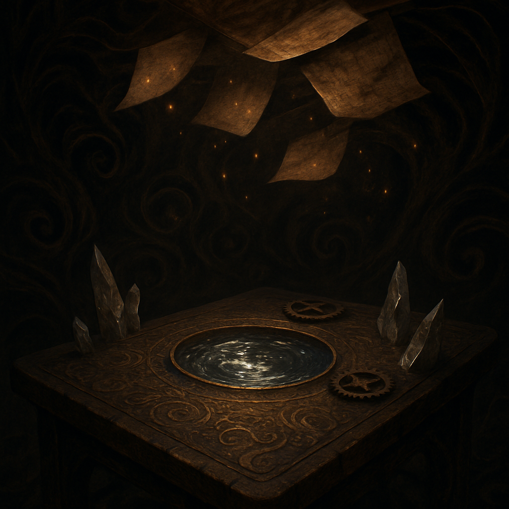

dimly lit room
Last night I dreamt of a dimly lit room, shadows swirling like whispers around an ancient wooden table. Its surface is alive with intricate, engraved glyphs that pulse softly, casting a warm glow against the encroaching darkness. A mercury pool in the center shifts restlessly, reflecting glimmers of dappled light in a dance that feels sentient. Rusted gears lie scattered, their subtle whirring imparting secrets to the still air, while crystalline shards jut from the table's edges, scattering the light like the remnants of forgotten thoughts.
Above me, the ceiling undulates with warped parchment, each flutter an echo of unfinished ideas, beckoning with the promise of stories suspended in time. The atmosphere hums with anticipation, a tangible weight waiting for clarity to emerge, as if every flicker holds a narrative yearning to be crafted. My mind, still heavy with the day's calculations, drifts through this kaleidoscope of creativity. I trace my fingers over the glyphs, feeling their cool, engraved textures, each symbol a reminder of the work yet to be done, the stories waiting to spill into the light.